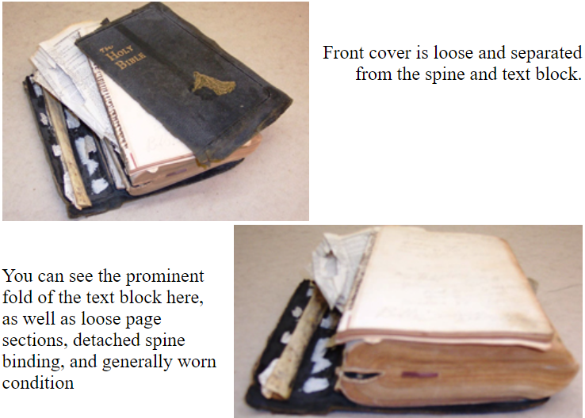

At the OBS Bindery and Repair shop we can restore all kinds of books, and we specialize in Bible restoration. We can rebind your favorite handheld bible or the large bible that has been in your family for generations. We have in stock a large selection of materials from which to choose, including leather, imitation leather and a great variety of cloth cover materials. Usually we can closely match the material and style of the original binding.
It may be hard to believe that the pictures below are of the same bible. Quite often, we receive bibles with pages that are torn and missing small pieces. The bible in these pictures had a great number of tattered pages and the original binding was completely in disrepair. The photos of the new binding is a good example of the quality of our work.
This next Bible restoration was completed summer 2015. The volume is smaller and less ornate, but in need of a lot of help.
The before pictures show broken binding, bent text block, as well as loose and tattered pages, which all needed some attention.
